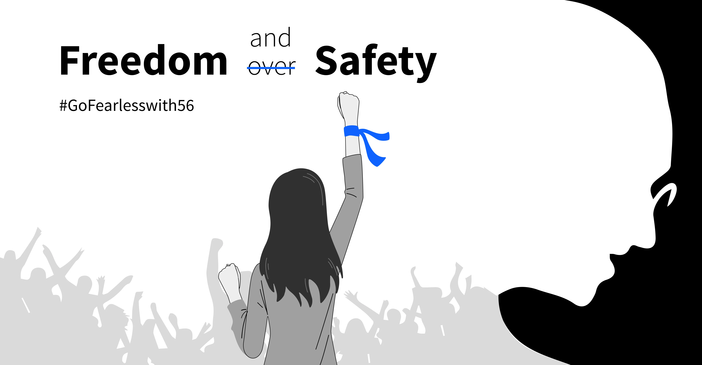

SOS Emergency
If you are in immediate danger, please use the SOS button on the home page to send an emergency alert to your selected contacts. This page provides additional information on how to use the SOS feature effectively.
Emergency Contacts

Parents
Phone: 123-456-7890

Boyfriend
Phone: 987-654-3210

Police
Phone: 100

Hospital
Phone: 102
Frequently Asked Questions (FAQ)
Women's Safety
Women's safety is a critical issue, and having immediate access to help can make a significant difference in emergency situations. Our SOS feature is designed to offer a quick and reliable way to alert your emergency contacts and share your location, ensuring you receive the help you need promptly.
It's essential to be aware of your surroundings and take preventive measures to protect yourself. Always trust your instincts and avoid risky situations when possible. The SOS button provides an extra layer of security by allowing you to quickly send an alert if you feel threatened or are in danger.
In addition to using the SOS feature, consider sharing your travel plans with trusted friends or family members, especially when traveling alone or to unfamiliar places. Staying connected with loved ones and having a plan in case of emergencies can significantly enhance your safety.
We encourage you to familiarize yourself with the features of the SOS button and ensure that your emergency contacts are updated and reachable. Your safety is our top priority, and we're here to support you with the tools and resources you need to stay secure.
Women's Safety: A Priority
Women's safety is a fundamental concern that affects us all. In an increasingly complex world, ensuring that women have access to immediate help and support in emergency situations is crucial. Our SOS feature is designed to offer a quick, reliable, and discreet way to alert your emergency contacts and share your location, providing an additional layer of security and peace of mind.
Empowering Women with Technology
Empowerment through technology can make a significant difference in personal safety. The SOS button on our website is a proactive tool that allows you to swiftly notify your chosen contacts when you feel threatened or are in a potentially dangerous situation. With just a click, you can send an alert with your current location, ensuring that help is on the way without delay. Women's safety is a fundamental concern that affects us all. In an increasingly complex world, ensuring that women have access to immediate help and support in emergency situations is crucial. Our SOS feature is designed to offer a quick, reliable, and discreet way to alert your emergency contacts and share your location, providing an additional layer of security and peace of mind.
Preventive Measures and Awareness
Empowerment through technology can make a significant difference in personal safety. The SOS button on our website is a proactive tool that allows you to swiftly notify your chosen contacts when you feel threatened or are in a potentially dangerous situation. With just a click, you can send an alert with your current location, ensuring that help is on the way without delay. Women's safety is a fundamental concern that affects us all. In an increasingly complex world, ensuring that women have access to immediate help and support in emergency situations is crucial. Our SOS feature is designed to offer a quick, reliable, and discreet way to alert your emergency contacts and share your location, providing an additional layer of security and peace of mind.Empowerment through technology can make a significant difference in personal safety. The SOS button on our website is a proactive tool that allows you to swiftly notify your chosen contacts when you feel threatened or are in a potentially dangerous situation. With just a click, you can send an alert with your current location, ensuring that help is on the way without delay. Women's safety is a fundamental concern that affects us all. In an increasingly complex world, ensuring that women have access to immediate help and support in emergency situations is crucial. Our SOS feature is designed to offer a quick, reliable, and discreet way to alert your emergency contacts and share your location, providing an additional layer of security and peace of mind.
Stay Connected and Informed
Staying connected with loved ones and having a well-thought-out safety plan can greatly enhance your personal security. Share your travel plans and check-in regularly, especially when traveling alone or to unfamiliar places. Knowing that help is just a button away can give you the confidence to navigate daily life with greater assurance.
Support and Resources
Our commitment extends beyond providing safety tools. We aim to raise awareness and provide resources that support women's safety in various scenarios. Education on personal safety, self-defense strategies, and access to emergency services are vital components of a comprehensive safety approach.Empowerment through technology can make a significant difference in personal safety. The SOS button on our website is a proactive tool that allows you to swiftly notify your chosen contacts when you feel threatened or are in a potentially dangerous situation. With just a click, you can send an alert with your current location, ensuring that help is on the way without delay. Women's safety is a fundamental concern that affects us all. In an increasingly complex world, ensuring that women have access to immediate help and support in emergency situations is crucial. Our SOS feature is designed to offer a quick, reliable, and discreet way to alert your emergency contacts and share your location, providing an additional layer of security and peace of mind.Empowerment through technology can make a significant difference in personal safety. The SOS button on our website is a proactive tool that allows you to swiftly notify your chosen contacts when you feel threatened or are in a potentially dangerous situation. With just a click, you can send an alert with your current location, ensuring that help is on the way without delay. Women's safety is a fundamental concern that affects us all. In an increasingly complex world, ensuring that women have access to immediate help and support in emergency situations is crucial. Our SOS feature is designed to offer a quick, reliable, and discreet way to alert your emergency contacts and share your location, providing an additional layer of security and peace of mind.